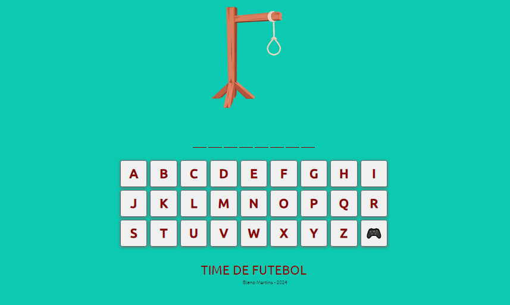

Este foi um projeto criado por mim no ano de 2023 como forma de praticar e melhorar meus conhecimentos nas linguagens de programação (HTML5, CSS3 e JavaScript). Este jogo conta com mais de 200 palavras para serem advinhadas. No momento não conta com o sistemas de dicas mas estou querendo implementar em futuras atualizações.
(Clique na Imagem para acessar o jogo)
FutQuiz é um jogo de testes de conhecimentos futebolisticos onde temos 33 perguntas até o momento, podendo ser acrecentadas mais quantidade no futuro. Essas perguntas tem como objetivo testar o conmhecimento dos jogadores sobre o futebol. No final das 33 perguntas é retornado a quantidade de perguntas acertadas pelo jogador, Porem no momento o jogo não conta com o recurso de indicar qual pergunta em especifico o jogador acertou ou errou, porem ja esta sendo criada uma nova versão de atualização do jogo para que esse recurso esteja disponivel em breve.
(Clique na Imagem para acessar o jogo)